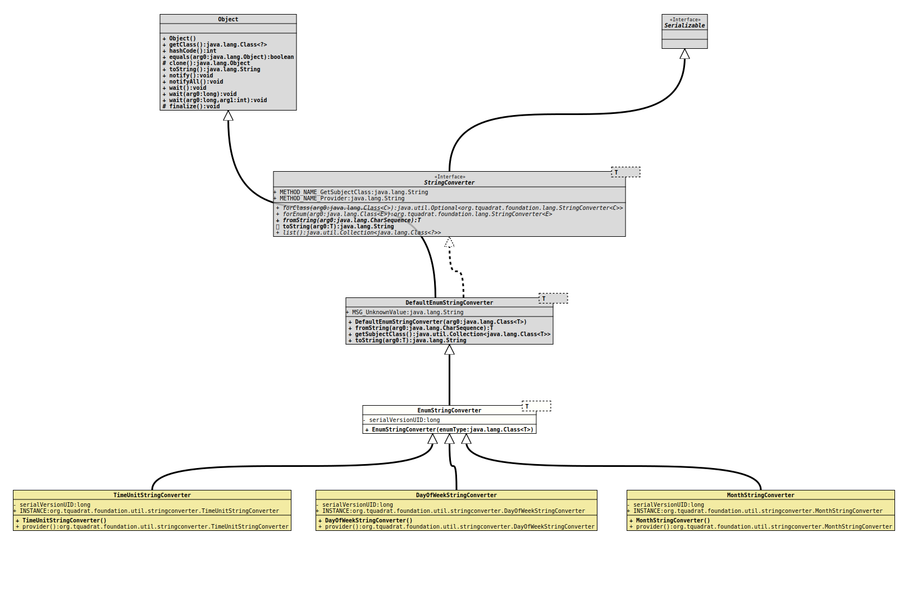

Module org.tquadrat.foundation.util
Class EnumStringConverter<T extends Enum<T>>
java.lang.Object
org.tquadrat.foundation.lang.internal.DefaultEnumStringConverter<T>
org.tquadrat.foundation.util.stringconverter.EnumStringConverter<T>
- Type Parameters:
T- The concrete data type that is handled by this String converter implementation.
- All Implemented Interfaces:
Serializable,StringConverter<T>
- Direct Known Subclasses:
DayOfWeekStringConverter,MonthStringConverter,TimeUnitStringConverter
@ClassVersion(sourceVersion="$Id: EnumStringConverter.java 820 2020-12-29 20:34:22Z tquadrat $")
@API(status=STABLE,
since="0.0.6")
public class EnumStringConverter<T extends Enum<T>>
extends DefaultEnumStringConverter<T>
An implementation of
StringConverter
for types that are derived from
Enum.
This class can be used as is, or as base class for the implementation of
StringConverter for a specific enum. A sample for the
latter are the StringConverter implementations for
DayOfWeek
(DayOfWeekStringConverter)
and
Month
(MonthStringConverter).- Author:
- Thomas Thrien (thomas.thrien@tquadrat.org)
- Version:
- $Id: EnumStringConverter.java 820 2020-12-29 20:34:22Z tquadrat $
- Since:
- 0.0.6
- See Also:
- UML Diagram
-

UML Diagram for "org.tquadrat.foundation.util.stringconverter.EnumStringConverter"
{kind=link}
-
Field Summary
Fields inherited from class org.tquadrat.foundation.lang.internal.DefaultEnumStringConverter
MSG_UnknownValueFields inherited from interface org.tquadrat.foundation.lang.StringConverter
METHOD_NAME_GetSubjectClass, METHOD_NAME_Provider -
Constructor Summary
ConstructorsConstructorDescriptionEnumStringConverter(Class<T> enumType) Creates a newEnumValueHandlerinstance. -
Method Summary
Methods inherited from class org.tquadrat.foundation.lang.internal.DefaultEnumStringConverter
fromString, getSubjectClass, toString
-
Constructor Details
-
EnumStringConverter
Creates a newEnumValueHandlerinstance.- Parameters:
enumType- The data type for the property.
-